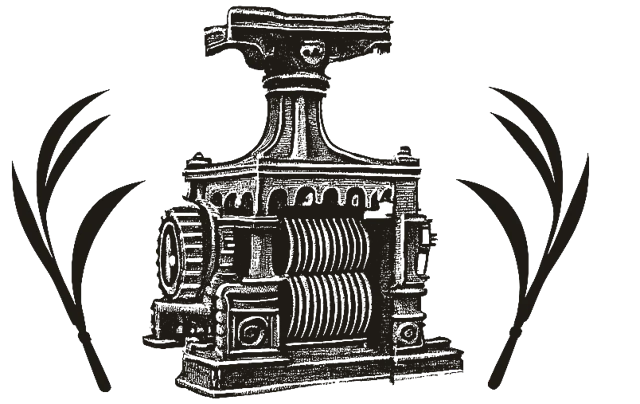

Pousada no centro de Camanducaia (MG),
pertinho de Monte Verde e da Serra da Mantiqueira.
A pousada
Fica na entrada de Camanducaia, de frente para o portal da cidade, perto do comércio e na saída para Monte Verde. Para quem viaja pela Fernão Dias, é uma parada fácil.
- Suítes com banheiro privativo e quartos sem suíte, com banheiro compartilhado
- Quartos para casal, família e grupos
- Café da manhã incluído nas suítes; nos quartos com banheiro compartilhado, R$ 20 por pessoa
- Chuveiro com aquecimento solar
- TV e ventilador em todos os quartos
- Wi-Fi grátis
- Copa com geladeira, micro-ondas e bebedouro
- Pátio na frente com vagas livres para carro
- Você recebe a chave e entra e sai quando quiser
O que dizem os hóspedes
Notas e trechos de avaliações deixadas no Google e no Booking.com.

Por que Engenho do Vô
O vô tinha uma fazenda e, nela, um engenho de moer cana. Ninguém pensava em vender nada: a garapa era da casa, servida a quem estivesse por perto, ainda espumando no copo.
Da fazenda para cá, o engenho veio junto. Hoje ele fica na porta da pousada, e é a primeira coisa que você vê quando chega. Foi ele que deu nome à casa, e é ele que está desenhado no nosso logotipo.
Camanducaia também nasceu de uma estrada. No século XVIII, os bandeirantes que saíam de Atibaia atrás de ouro passavam por aqui, e foi nesse caminho que surgiram as primeiras casas. O nome vem do tupi e, pela explicação mais aceita, quer dizer "feijão queimado". A cidade já se chamou Jaguary e só voltou a ser Camanducaia em 1925.
Serra acima, um imigrante da Letônia, Verner Grinberg, transformou uma fazenda isolada na vila que hoje é Monte Verde, distrito da cidade.
A estrada continua passando pela porta. Agora ela se chama Fernão Dias, e quem vem por ela encontra o portal da cidade, o engenho do vô e um quarto pronto para descansar.
Grupos e romarias
Romeiros a pé, de bicicleta ou de moto, excursões, trilheiros e jipeiros: temos quartos com beliche e lugar na varanda para guardar bicicletas e motos. Mande pelo WhatsApp as datas e quantas pessoas vêm, e a gente vê como dividir os quartos.
Combinar pelo WhatsAppCamanducaia e arredores
Camanducaia fica no Sul de Minas, na Serra da Mantiqueira, à beira da Fernão Dias. Monte Verde, que é distrito da cidade, fica a uns 30 km da pousada.
Arraste para os lados para ver o mapa inteiro.
Na beira da Fernão Dias
A pousada fica no trevo de entrada da cidade. Quem vem de São Paulo chega em umas duas horas; de Belo Horizonte, em umas seis.
Monte Verde, a 29 km
São uns 55 minutos de carro pela serra. Também há ônibus saindo da praça do Banco Santander, no centro de Camanducaia; confira os horários antes.
Fazenda Esperança
Fazenda centenária em Jaguary de Cima, no km 20 da estrada para Sapucaí-Mirim, com museu, piscinas naturais, trilhas leves e comida no fogão a lenha. Confirme o funcionamento antes de ir.
Para quem vai a Monte Verde
- Para as trilhas da Pedra Redonda e do Pico do Selado, leve água e calçado firme.
- No inverno a serra faz frio de verdade, principalmente à noite. Leve agasalho.
- O portal oficial da vila tem mapa, trilhas, restaurantes e a agenda de eventos.
Previsão para Camanducaia
Previsão: Open-MeteoVídeos
Notícias de Camanducaia e Monte Verde
-
{{NOTICIAS}}
Perguntas frequentes
Como chegar
{{ENDERECO}}
Na saída da Fernão Dias (BR-381). São uns 130 km de São Paulo e 30 km de Monte Verde.
Bom saber
- A porta da rua fecha às 22h. Depois disso, use a chave que entregamos na chegada.
- As diárias são pagas na chegada, ou no cartão se você reservar pelo Booking.
- Crianças até 5 anos não pagam. A partir dos 6 anos, pagam a diária.
- Para pedir comida, a cidade usa o app UaiRango. Para corrida, o Lucar.
- Damos uma toalha por hóspede. Não é permitido fumar dentro da pousada.